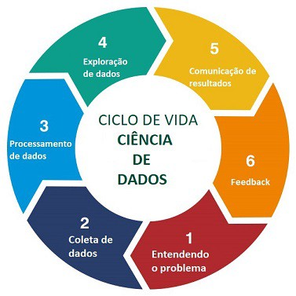
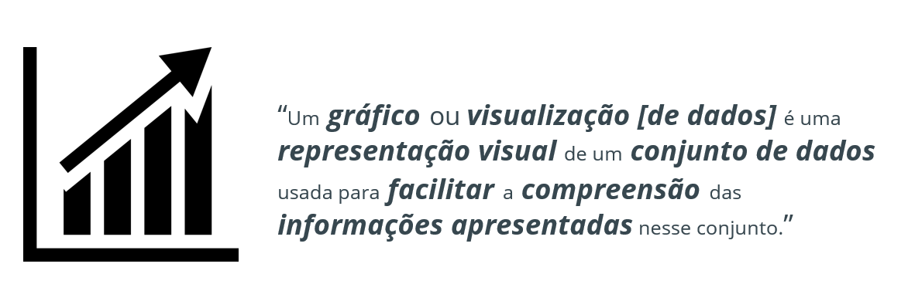
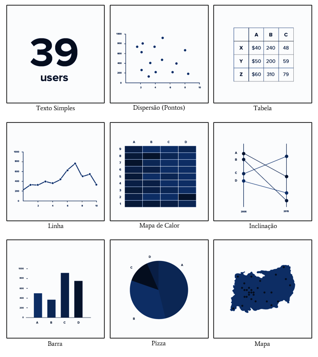
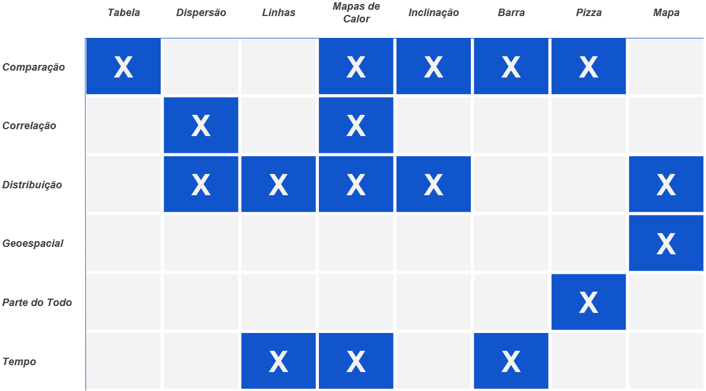

Introdução
Olá Cientista de Dados!
Na primeira aula deste curso, vamos aprender um pouco de teoria sobre Visualização e Ciência de Dados, com o objetivo de compreendermos a importância da Visualização de Dados dentro da Ciência de Dados.
O que é Ciência de Dados
A ciência de dados é uma disciplina que usa habilidades matemáticas e técnicas avançadas de análise de dados para transformar grandes quantidades de informações em insights úteis. Ela é usada em diversos setores para tomada de decisão informada e resolução de problemas complexos.
Ciência de dados é como ser um detetive super nerd que desvenda mistérios escondidos nos dados. Os cientistas de dados mergulham em montanhas de informações, usando suas habilidades matemáticas e de programação para desvendar padrões ocultos e responder a perguntas importantes. Eles são os mestres em transformar dados bagunçados em conhecimento valioso, ajudando empresas e pesquisadores a tomar decisões informadas. É como ter um superpoder de números e algoritmos, só que sem a capa e a máscara.
O Fluxo de Trabalho de Ciência de Dados
O Ciclo de Vida de Ciência de Dados é a formalização das 6 etapas que os cientistas de dados trabalham a cada projeto para chegar ao final com o resultado solicitado pelo cliente, e podemos ver suas fases na imagem abaixo:
1 - Entendendo o problema - aqui é feito o processo de descoberta, onde o problema que o cliente deseja resolvido é devidamente explicado, quebrado em requisitos e os dados disponíveis (ou a falta deles) são disponibilizados.
2 - Coleta de dados - nesta fase, os conjuntos de dados iniciais caso existam são validados e se determina que outras fontes podem ser usadas para obter ou enriquecer os dados. Também são escritos os primeiros códigos para realizar a busca e download dos dados.
3 - Processamento de dados - nesta fase os dados são analisados e transformados para atender ao propósito de negócio. Também é a fase em que começa o processo de criação de modelos de machine learning.
4 - Exploração de dados - esta fase é caracterizada principalmente por visualização de dados sendo utilizada para compreender os dados gerados pelo modelo. São utilizadas técnicas específicas para essa exploração e todas dependem primariamente do bom entendimento na criação de visualizações de dados.
5 - Comunicação de resultados - esta fase também reconhecida por fazer uso extensivo de técnicas de visualização de dados aliadas a técnicas de story telling para mostrar ao cliente os resultados obtidos.
6 - Feedback - na última fase deste ciclo, se coleta as impressões do cliente e se inicia (caso necessário) uma nova iteração do projeto, para o refinamento da solução apresentada e a possibilidade de trabalhar em novos requisitos.
O que é Visualização de Dados???

Tipos de Visualização
Existem diversos tipos de visualizações disponíveis. Sua utilização está associada ao tipo de informação e ao objetivo que temos ao mostrar os dados.

Quanto a objetivos, as visualizações são utilizadas com as seguintes finalidades: - Comparar valores - Evidenciar a correlação entre valores (como os dois valores se comportam em conjunto) - Como um valor se distribui em relação a uma dimensão contínua (geralmente o tempo) - Como um valor se distribui especificamente em relação a posicionamento geográfico - Como um valor se distribui entre dimensões não continuas que formam partes de um todo; o quanto cada valor representa em relação a esse todo - Como um valor se comporta em relação tempo.
Tipos de Visualização X Objetivo de Comunicação
Abaixo segue um diagrama com uma indicação de quais gráficos podem ser utilizados de acordo com o seu objetivo.

Como podemos criar Visualizações???
Assim como existem diversos tipos de visualizações, existem diversas ferramentas. Abaixo, colocamos uma lista de ferramentas para visualização de dados: - Excel - Tableau - Power BI - Qlik - Looker (antes chamada de Google Data Studio) - Oracle Analytics - SAP Business Objects - Grafana - Kibana
Estas ferramentas se caracterizam por uma interface de usuário totalmente voltada para a criação de visualizações. Se vocês estivessem em um curso de Análise de Dados, seriam nossa escolha para o curso, pois elas focam na modelagem dos dados e criação das visualizações. Mas vocês estão em um curso para iniciarem na carreira de Cientistas de Dados, certo?
Então, como um Cientista de Dados cria visualizações???
Um Cientista de Dados utiliza a Visualização de Dados de duas formas: 1) Como uma ferramenta de exploração dos dados, durante a fase em que estão procurando respostas 2) Como uma ferramenta de comunicação, para divulgar resultados
Considerando essas duas necessidades, embora o Cientista de Dados pudesse utilizar ferramentas como as citadas anteriormente, a verdade é que ele precisa de uma ferramenta que consiga combinar o poder da programação, com visualização de dados e também com uma estrutura documental organizada para compartilhamento de informação.
Por isso, iremos utilizar uma tecnologia diferente para aprender visualização de dados: vamos aprender a criar visualizações de forma programática, ou seja, vamos criar visualizações utilizando programas escritos em Python.
Porquê vamos fazer isso?
Por alguns motivos:
Como cientistas de dados, a maneira mais comum de entregar os resultados do seu trabalho, além de apresentações em powerpoint é através de notebooks interativos, como o Google Colab, ou o Jupyter. São ferramentas que ajudam muito no desenvolvimento de um story telling orientado a divulgação dos resultados
Atualmente Python é a linguagem a se aprender na carreira de Cientista de Dados. Outras linguagens como R, Julia e até Java também são utilizadas, mas por enquanto, Python é a preferida
As bibliotecas de visualização em Python são muito flexíveis e poderosas, inclusive são utilizadas por algumas das ferramentas citadas acima
Então, agora que toda a teoria necessária está explicada, bora trabalhar??? Na próxima aula, iremos aprender sobre o Google Colab, a ferramenta que escolhemos para conduzir o restante deste curso! Aula 002 - Google Colab